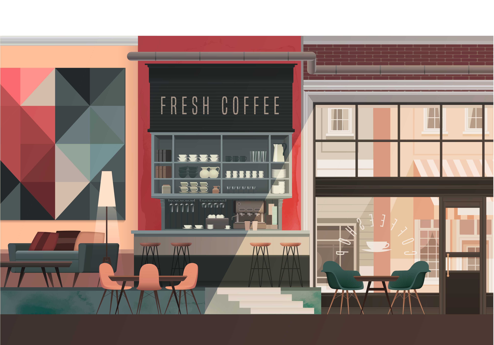
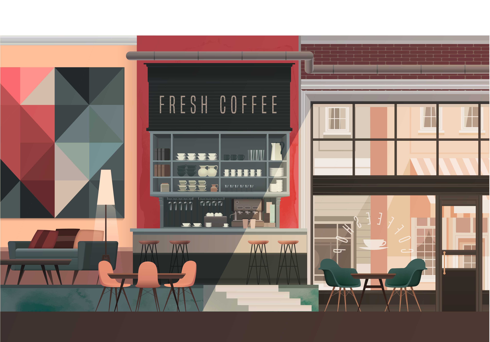

咖啡馆介绍
查看菜单 

咖啡馆文化是西方的人文传统历史文化之一，咖啡馆是一个国家或一座城市的一个文化传承载体，一个不可或缺的细胞。 咖啡馆文化中最核心的功能是社会经济润滑剂，它无形中拉近了不同阶层间的距离。各国不同的风情和文化，造就了不通的咖啡馆文化。
咖啡的故乡在非洲埃塞尔比亚的南部，约在公元六世纪左右被人发现，因具有提神醒脑的作用，当地人开始咀嚼咖啡豆，用水煮咖啡喝。 由于神奇的提神效果，咖啡得到了广泛传播。在非洲部落里，甚至还作为勇士们战前饮用的”圣品“，充满了浓厚的宗教色彩。一个英国商人 从土耳其帝国首次养成了饮用咖啡的习惯，在他回到伦敦后，也把这个习惯带到了英国。
咖啡馆菜单
-
咖啡
- 美式咖啡
- 卡布奇诺
- 焦糖玛奇朵
-
拿铁
- 冰
- 热
-
摩卡
- 冰
- 热
- 爱尔兰咖啡
- 维也纳咖啡
-
果汁
- 鲜榨芒果汁
- 鲜榨橙汁
- 鲜榨西瓜汁
- 鲜榨青瓜汁
-
奶茶
- 鸳鸯奶茶
- 珍珠奶茶
- 原味奶茶
- 布丁奶茶
-
甜品
- 黑森林
- 芒果慕斯
- 草莓慕斯
- 焦糖布丁